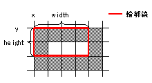
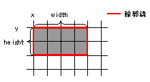

com.nttdocomo.ui.Graphics
com.nttdocomo.ui.Graphics
|
||||||||||
| 前のクラス 次のクラス | フレームあり フレームなし | |||||||||
| 概要: 入れ子 | フィールド | コンストラクタ | メソッド | 詳細: フィールド | コンストラクタ | メソッド | |||||||||
Object
グラフィックス クラスです。
キャンバスおよびイメージに対応するグラフィックスコンテキストを表します。
ダブルバッファリングを行うための
lock(), unlock(boolean)メソッドは、かならず組みで使用してください。
Canvas.paint(Graphics)メソッド内でlock()メソッドを呼び出した場合、
必ずそのメソッド内で unlock(boolean)メソッドを呼び出してください。
バッファがフラッシュされていない状態でフレームが切り替わり、
再びキャンバスが表示されたときの状態は、機種依存になります。
なお、典型的な実装では、Canvas.paint(Graphics)メソッドが呼ばれた直後にバッファがフラッシュされます。
このクラスが仮定している座標平面と、 現実に存在する出力デバイスとの対応は、 J2SE の Graphics クラスの規定に準拠します。特に、前提として、
drawRect(int, int, int, int) メソッドなど)
fillRect(int, int, int, int) メソッドなど)
drawString(String, int, int) メソッドなど)
という点を理解しておく必要があります。 以下に、それぞれのグループの描画規則について説明します。

無限に細い輪郭線の上を、 あたかも太さ1ピクセルのペンでなぞったように描画されます。 その時、ペン先は、常に輪郭線上の右下に位置しています。 例えば、原点を変更していない場合、drawRect(int x, int y, int width, int height)
は、横方向には x 番目から x + width 番目のピクセル
(width + 1 個)
が描画され、縦方向には y 番目から y + height 番目のピクセル
(height + 1個)
が描画されることになります(x、y は 0 から数える)。
無限に細い輪郭線の内部を塗り潰します。 例えば、原点を変更していない場合、fillRect(int x, int y, int width, int height)
は、横方向には x 番目から x + width - 1 番目のピクセル
(width 個)
が塗り潰され、縦方向には y 番目から y + height - 1 番目のピクセル
(height 個)
が塗り潰されることになります(x、y は 0 から数える)。
[DoJa-4.0 (901i) 以降]
getColorOfRGB(int, int, int, int)
により得られる半透明色を setColor(int) に設定することによって、
一部のメソッドで 半透明描画を行うことができます。
| フィールドの概要 | |
static int |
AQUA
水色を表す色の名前です (=3)。 |
static int |
BLACK
黒色を表す色の名前です (=0)。 |
static int |
BLUE
青色を表す色の名前です (=1)。 |
static int |
FLIP_HORIZONTAL
イメージ描画時の反転方法のうち、横方向に鏡像反転することを表します(=1)。 |
static int |
FLIP_NONE
イメージ描画時の反転方法のうち、反転しないことを表します(=0)。 |
static int |
FLIP_ROTATE
イメージ描画時の反転方法のうち、縦横方向に鏡像反転(180度回転)することを表します(=3)。 |
static int |
FLIP_ROTATE_LEFT
イメージ描画時の反転方法のうち、左に90度回転することを表します(=4)。 |
static int |
FLIP_ROTATE_RIGHT
イメージ描画時の反転方法のうち、右に90度回転することを表します(=5)。 |
static int |
FLIP_ROTATE_RIGHT_HORIZONTAL
イメージ描画時の反転方法のうち、右に90度回転し、 横方向に鏡像反転することを表します(=6)。 |
static int |
FLIP_ROTATE_RIGHT_VERTICAL
イメージ描画時の反転方法のうち、右に90度回転し、 縦方向に鏡像反転することを表します(=7)。 |
static int |
FLIP_VERTICAL
イメージ描画時の反転方法のうち、縦方向に鏡像反転することを表します(=2)。 |
static int |
FUCHSIA
紫色を表す色の名前です (=5)。 |
static int |
GRAY
灰色を表す色の名前です (=8)。 |
static int |
GREEN
暗い緑色を表す色の名前です (=10)。 |
static int |
LIME
緑色を表す色の名前です (=2)。 |
static int |
MAROON
暗い赤色を表す色の名前です (=12)。 |
static int |
NAVY
暗い青色を表す色の名前です (=9)。 |
static int |
OLIVE
暗い黄色を表す色の名前です (=14)。 |
static int |
PURPLE
暗い紫色を表す色の名前です (=13)。 |
static int |
RED
赤色を表す色の名前です (=4)。 |
static int |
SILVER
銀色を表す色の名前です (=15)。 |
static int |
TEAL
暗い水色を表す色の名前です (=11)。 |
static int |
WHITE
白色を表す色の名前です (=7)。 |
static int |
YELLOW
黄色を表す色の名前です (=6)。 |
| コンストラクタの概要 | |
protected |
Graphics()
アプリケーションが直接このクラスのインスタンスを生成することはできません。 |
| メソッドの概要 | |
void |
clearClip()
現在設定されているクリッピング領域を解除します。 |
void |
clearRect(int x,
int y,
int width,
int height)
矩形領域を背景色で塗りつぶします。 |
void |
clipRect(int x,
int y,
int width,
int height)
現在のクリッピング領域と引数によって指定された矩形との積(Intersection)を とって、クリッピング領域として設定します。 |
Graphics |
copy()
グラフィクスオブジェクトのコピーを生成します。 |
void |
copyArea(int x,
int y,
int width,
int height,
int dx,
int dy)
矩形領域を、dx と dy で指定された距離でコピーします。 |
void |
dispose()
グラフィックスコンテキストを破棄します。 |
void |
drawArc(int x,
int y,
int width,
int height,
int startAngle,
int arcAngle)
弧を描画します。 |
void |
drawChars(char[] data,
int x,
int y,
int off,
int len)
文字列の一部を描画します。 |
void |
drawImage(Image image,
int[] matrix)
イメージに 2 次元のアフィン変換をかけて描画します。 |
void |
drawImage(Image image,
int[] matrix,
int sx,
int sy,
int width,
int height)
イメージの一部に 2 次元のアフィン変換をかけて描画します。 |
void |
drawImage(Image image,
int x,
int y)
イメージを描画します。 |
void |
drawImage(Image image,
int dx,
int dy,
int sx,
int sy,
int width,
int height)
イメージの一部を描画します。 |
void |
drawImageMap(ImageMap map,
int x,
int y)
イメージマップを描画します。
|
void |
drawLine(int x1,
int y1,
int x2,
int y2)
直線を描画します。 |
void |
drawPolyline(int[] xPoints,
int[] yPoints,
int nPoints)
指定された点を結ぶ線分を描画します。 |
void |
drawPolyline(int[] xPoints,
int[] yPoints,
int offset,
int count)
指定された点を結ぶ線分を描画します。 |
void |
drawRect(int x,
int y,
int width,
int height)
矩形を描画します。 |
void |
drawScaledImage(Image image,
int dx,
int dy,
int width,
int height,
int sx,
int sy,
int swidth,
int sheight)
イメージを拡大・縮小して描画します。 |
void |
drawSpriteSet(SpriteSet sprites)
スプライトセットを描画します。
|
void |
drawSpriteSet(SpriteSet sprites,
int offset,
int count)
スプライトセットの一部を描画します。
|
void |
drawString(String str,
int x,
int y)
文字列を描画します。 |
void |
drawString(XString xStr,
int x,
int y)
XStringの文字列を描画します。 |
void |
drawString(XString xStr,
int x,
int y,
int off,
int len)
XStringの文字列の一部を描画します。 |
void |
fillArc(int x,
int y,
int width,
int height,
int startAngle,
int arcAngle)
弧を塗りつぶします。 |
void |
fillPolygon(int[] xPoints,
int[] yPoints,
int nPoints)
多角形を塗りつぶします。 |
void |
fillPolygon(int[] xPoints,
int[] yPoints,
int offset,
int count)
多角形を塗りつぶします。 |
void |
fillRect(int x,
int y,
int width,
int height)
矩形領域を塗りつぶします。 |
static int |
getColorOfName(int name)
名前を指定してその名前に対応するカラーを表す整数値を取得します。 |
static int |
getColorOfRGB(int r,
int g,
int b)
RGB 値を指定してそのRGB値に対応するカラーを表す整数値を取得します。 |
static int |
getColorOfRGB(int r,
int g,
int b,
int a)
RGB 値、ならびにアルファ値を指定して、 対応するカラーを表す整数値を取得します。 |
int |
getPixel(int x,
int y)
点(x, y)の右下のピクセル値を取得します。 |
int[] |
getPixels(int x,
int y,
int width,
int height,
int[] pixels,
int off)
指定する領域のピクセル値を取得します。 |
int |
getRGBPixel(int x,
int y)
点(x, y)の右下の画素の色を0xRRGGBBの形式で取得します。 |
int[] |
getRGBPixels(int x,
int y,
int width,
int height,
int[] pixels,
int off)
矩形領域の画素の色を0xRRGGBBの形式で取得します。 |
void |
lock()
描画デバイスに対して、ダブルバッファリングの開始を宣言します。 |
void |
setClip(int x,
int y,
int width,
int height)
引数によって指定された矩形をクリッピング領域として設定します。 |
void |
setColor(int c)
描画に使用する色を設定します。 |
void |
setFlipMode(int flipmode)
イメージの描画時に反転または回転して描画を行うかどうかを設定します。 |
void |
setFont(Font f)
描画に使用するフォントを設定します。 |
void |
setOrigin(int x,
int y)
描画の際の座標原点を設定します。 |
void |
setPictoColorEnabled(boolean b)
絵文字を描画する際にグラフィックスに設定された色を有効とするかどうかを指定します。 |
void |
setPixel(int x,
int y)
点を描画します。 |
void |
setPixel(int x,
int y,
int color)
色を指定して点を描画します。 |
void |
setPixels(int x,
int y,
int width,
int height,
int[] pixels,
int off)
指定する領域のピクセル値を設定します。 |
void |
setRGBPixel(int x,
int y,
int pixel)
0xRRGGBBの形式で色を指定して点を描画します。 |
void |
setRGBPixels(int x,
int y,
int width,
int height,
int[] pixels,
int off)
矩形領域の画素の色を0xRRGGBBの形式で設定します。 |
void |
unlock(boolean forced)
描画デバイスに対して、ダブルバッファリングの終了を宣言します。 |
| クラス Object から継承したメソッド |
equals, getClass, hashCode, notify, notifyAll, toString, wait, wait, wait |
| フィールドの詳細 |
public static final int FLIP_NONE
setFlipMode(int),
定数フィールド値public static final int FLIP_HORIZONTAL
setFlipMode(int),
定数フィールド値public static final int FLIP_VERTICAL
setFlipMode(int),
定数フィールド値public static final int FLIP_ROTATE
setFlipMode(int),
定数フィールド値public static final int FLIP_ROTATE_LEFT
setFlipMode(int),
定数フィールド値public static final int FLIP_ROTATE_RIGHT
setFlipMode(int),
定数フィールド値public static final int FLIP_ROTATE_RIGHT_HORIZONTAL
この反転方法は、以下の反転方法と同じ結果になります。
setFlipMode(int),
定数フィールド値public static final int FLIP_ROTATE_RIGHT_VERTICAL
この反転方法は、以下の反転方法と同じ結果になります。
setFlipMode(int),
定数フィールド値public static final int BLACK
getColorOfName(int),
定数フィールド値public static final int BLUE
getColorOfName(int),
定数フィールド値public static final int LIME
getColorOfName(int),
定数フィールド値public static final int AQUA
getColorOfName(int),
定数フィールド値public static final int RED
getColorOfName(int),
定数フィールド値public static final int FUCHSIA
getColorOfName(int),
定数フィールド値public static final int YELLOW
getColorOfName(int),
定数フィールド値public static final int WHITE
getColorOfName(int),
定数フィールド値public static final int GRAY
getColorOfName(int),
定数フィールド値public static final int NAVY
getColorOfName(int),
定数フィールド値public static final int GREEN
getColorOfName(int),
定数フィールド値public static final int TEAL
getColorOfName(int),
定数フィールド値public static final int MAROON
getColorOfName(int),
定数フィールド値public static final int PURPLE
getColorOfName(int),
定数フィールド値public static final int OLIVE
getColorOfName(int),
定数フィールド値public static final int SILVER
getColorOfName(int),
定数フィールド値| コンストラクタの詳細 |
protected Graphics()
| メソッドの詳細 |
public Graphics copy()
public void dispose()
public void lock()
unlock(boolean)public void unlock(boolean forced)
forced - ダブルバッファリングがサポートされている場合に強制的にフラッシュするかどうかを
指定します。lock()
public void setOrigin(int x,
int y)
x - X 方向のオフセット値を指定します。y - Y 方向のオフセット値を指定します。
public static int getColorOfRGB(int r,
int g,
int b)
RGB 値を指定してそのRGB値に対応するカラーを表す整数値を取得します。 各引数が、0より小さい場合や255より大きい場合は、例外が発生します。
getColorOfRGB(r, g, b, 255)
を呼び出すことと同じです。
r - 赤要素の輝度を指定します（0〜255）。g - 緑要素の輝度を指定します（0〜255）。b - 青要素の輝度を指定します（0〜255）。
IllegalArgumentException - 引数 r, g, b に範囲外の値が指定された場合に発生します。
public static int getColorOfRGB(int r,
int g,
int b,
int a)
RGB 値、ならびにアルファ値を指定して、 対応するカラーを表す整数値を取得します。
このメソッドで取得した値を setColor(int)
などで設定することで、図形の半透明描画が可能となります。
現在の実装で半透明描画をサポートしているのは、
以下のメソッドのみです。
なお、サポートするメソッドのリストは、
将来のバージョンで追加される可能性があります。
fillRect(int, int, int, int)fillArc(int, int, int, int, int ,int)fillPolygon(int[], int[], int)fillPolygon(int[], int[], int, int)その他のメソッドを呼び出して描画を行った場合や、 高レベル UI に対して、アルファ値を含む色を指定した場合には、 アルファ値が 255 である色(完全に不透明な色) が指定されたのと同様に振る舞います。
半透明描画における描画色は、 描画先のキャンバスまたはイメージのピクセル値のRGB成分を (DR, DG, DB)、 描画しようとしている色のRGB成分を (SR, SG, SB) として、下記計算式によって求まります(i = R, G, B)。
Di = Di × (1 - α) + Si × α
ここで、α は、 このメソッドで指定されたアルファ値を 255 で除して、 区間 [0.0, 1.0] に収まるように正規化したものです。
r - 赤要素の輝度を指定します(0〜255)g - 緑要素の輝度を指定します(0〜255)b - 青要素の輝度を指定します(0〜255)a - アルファ値を指定します(0〜255)
IllegalArgumentException -
引数 r、g、b、a に範囲外の値が指定された場合に発生します。
public static int getColorOfName(int name)
name - このクラスで定義される色の名前を示す値を指定します。
IllegalArgumentException - 引数 name に不正な値が指定された場合に発生します。
具体的には、このクラスで定義された色に対応する値
(Graphics.BLACK, Graphics.BLUEなど)
以外の値が指定された場合に発生します。
public void setColor(int c)
c - 描画に使用する色を指定します。
IllegalArgumentException - 引数 c に不正な値が指定された場合に発生します。
public void setFont(Font f)
f - 描画に使用するフォントを指定します。
NullPointerException - 引数 f に null が指定された場合に発生します。
Font.getDefaultFont()
public void clearRect(int x,
int y,
int width,
int height)
x - 矩形の左上のX座標を指定します。y - 矩形の左上のY座標を指定します。width - 矩形の幅を指定します。height - 矩形の高さを指定します。
IllegalArgumentException - 引数 width, heightのどちらかまたは両方に 0 未満の値が指定された場合に発生します。
Frame.setBackground(int)
public void drawLine(int x1,
int y1,
int x2,
int y2)
setColor(int)メソッドで設定された色で描画します。
x1 - 直線の描画開始点のX座標を指定します。y1 - 直線の描画開始点のY座標を指定します。x2 - 直線の描画終了点のX座標を指定します。y2 - 直線の描画終了点のY座標を指定します。
public void drawRect(int x,
int y,
int width,
int height)
setColor(int)メソッドで設定された色で描画します。
width、height のどちらか一方が正で他方が 0 の場合は直線を描画し、 両方が 0 の場合は点を描画します。
x - 矩形の左上のX座標を指定します。y - 矩形の左上のY座標を指定します。width - 矩形の幅を指定します。height - 矩形の高さを指定します。
IllegalArgumentException - 引数 width, height のどちらかまたは両方に 0 未満の値が指定された場合に発生します。
public void fillRect(int x,
int y,
int width,
int height)
setColor(int) メソッドで設定された色で塗りつぶします。
width、height のどちらか一方が正で他方が0の場合または両方が0の場合は、
なにも描画しません。
x - 矩形の左上のX座標を指定します。y - 矩形の左上のY座標を指定します。width - 矩形の幅を指定します。height - 矩形の高さを指定します。
IllegalArgumentException - 引数 width, height のどちらかまたは両方に
0 未満の値が指定された場合に発生します。
public void drawImage(Image image,
int[] matrix)
イメージ上の座標 (x, y) の画素は、 以下のような行列演算によって求められる座標 (x', y') に描画されます。
[ x'] 1 [ m00 m01 m02 ] [ x ] [ y'] = ------ [ m10 m11 m12 ] [ y ] [ 1 ] 4096 [ 0 0 4096 ] [ 1 ]引数には、m00〜m12 の六つの要素の値を指定します。
image - 描画するイメージオブジェクトを指定します。matrix - 2次元のアフィン変換の行列の要素を指定します。
int 配列の先頭から順に m00, m01, m02, m10, m11, m12 の値を設定します。
配列の長さが7以上の場合、第6要素以降の値は無視されます。
NullPointerException - 引数 image または matrix に null が指定された場合に発生します。
ArrayIndexOutOfBoundsException - 引数 matrix の長さが6未満の場合に発生します。
UIException - 引数 image に既に dispose されているイメージが指定された場合に発生します(ILLEGAL_STATE)。
public void drawImage(Image image,
int[] matrix,
int sx,
int sy,
int width,
int height)
イメージ上の座標 (x, y) の画素は、
以下のような行列演算によって求められる座標 (x', y') に描画されます。
ここで、イメージ上の座標系の原点は、引数 sx,
sy, width, height
によって切り取られた後のイメージの左上です。
[ x'] 1 [ m00 m01 m02 ] [ x ] [ y'] = ------ [ m10 m11 m12 ] [ y ] [ 1 ] 4096 [ 0 0 4096 ] [ 1 ]引数には、m00〜m12 の六つの要素の値を指定します。
image - 描画するイメージオブジェクトを指定します。matrix - 2次元のアフィン変換の行列の要素を指定します。
int 配列の先頭から順に m00, m01, m02, m10, m11, m12 の値を設定します。
配列の長さが7以上の場合、第6要素以降の値は無視されます。sx - 描画元の矩形の左上の X 座標を指定します。sy - 描画元の矩形の左上の Y 座標を指定します。width - 描画元の矩形の幅を指定します。height - 描画元の矩形の高さを指定します。
NullPointerException - 引数 image または matrix に null が指定された場合に発生します。
IllegalArgumentException - 引数 width, height のどちらかまたは両方に 0 未満の値が指定された場合に発生します。
ArrayIndexOutOfBoundsException - 引数 matrix の長さが6未満の場合に発生します。
UIException - 引数 image に既に dispose されているイメージが指定された場合に発生します(ILLEGAL_STATE)。
public void drawImage(Image image,
int x,
int y)
image - 描画するイメージオブジェクトを指定します。x - X座標を指定します。y - Y座標を指定します。
NullPointerException - 引数 image に null が指定された場合に発生します。
UIException - 引数 image に既に dispose されているイメージが指定された場合に発生します(ILLEGAL_STATE)。
public void drawImage(Image image,
int dx,
int dy,
int sx,
int sy,
int width,
int height)
image - 描画するイメージオブジェクトを指定します。dx - 描画先の X 座標を指定します。dy - 描画先の Y 座標を指定します。sx - 描画元の矩形の左上の X 座標を指定します。sy - 描画元の矩形の左上の Y 座標を指定します。width - 描画元の矩形の幅を指定します。height - 描画元の矩形の高さを指定します。
IllegalArgumentException - 引数 width, height のどちらかまたは両方に 0 未満の値が指定された場合に発生します。
NullPointerException - 引数 image に null が指定された場合に発生します。
UIException - 引数 image に既に dispose されているイメージが指定された場合に発生します(ILLEGAL_STATE)。
public void drawPolyline(int[] xPoints,
int[] yPoints,
int nPoints)
setColor(int) メソッドで設定された色で描画します。
ただし、
最初に指定された点と最後に指定された点が異なる場合、その区間は描画しません。
引数で指定された配列のサイズより、引数で指定された点の総数が小さい場合、
配列の最初から点の総数個だけの要素が使用されます。
nPoints が 0 の場合は、なにも描画しません。
なお、点の数が 1 の場合、点を描画します。
xPoints - 点のx座標の配列。yPoints - 点のy座標の配列。nPoints - 点の総数。
IllegalArgumentException - [DoJa-1.0 のみ] 配列のサイズが点の総数より小さい場合、または nPoints が負の場合に発生します。
NullPointerException - [DoJa-2.0 以降] 引数 xPoints, yPoints のどちらかまたは両方に null が指定された場合に発生します。
ArrayIndexOutOfBoundsException - [DoJa-2.0 以降] 引数 nPoints に負の値が指定された場合、引数 nPoints で指定された値よりも配列のサイズが小さい場合に発生します。
public void drawPolyline(int[] xPoints,
int[] yPoints,
int offset,
int count)
setColor(int)メソッドで設定された色で描画します。
ただし、
最初に指定された点と最後に指定された点が異なる場合、その区間は描画しません。
count が 0 の場合は、なにも描画しません。
なお、点の数が 1 の場合、点を描画します。
xPoints - 点の X 座標の配列を指定します。yPoints - 点の Y 座標の配列を指定します。offset - 描画する点のオフセットを指定します。count - 描画する点の個数を指定します。
NullPointerException - 引数 xPoints, yPoints のどちらかまたは両方に null が指定された場合に発生します。
ArrayIndexOutOfBoundsException - 引数 offset に負の値が指定された場合、引数 count に負の値が指定された場合、
引数 offset または引数 offset + count の値が配列のサイズを超える場合に発生します。
public void fillPolygon(int[] xPoints,
int[] yPoints,
int nPoints)
setColor(int) メソッドで設定された色で塗りつぶします。
ミニマムスペックでは、頂点の数が 16 点以下の多角形を塗りつぶすことができることとします。
引数で指定された配列のサイズより、引数で指定された頂点の総数が小さい場合、
配列の最初から頂点の総数個だけの要素が利用されます。
nPoints が 3 未満の場合は、なにも描画しません。
頂点数が 16 より多くて多角形の塗りつぶしができない場合の振舞は機種依存です。
xPoints - x座標の配列yPoints - y座標の配列nPoints - 頂点の総数
NullPointerException - [DoJa-2.0 以降] 引数 xPoints, yPoints のどちらかまたは両方に null が指定された場合に発生します。
IllegalArgumentException - [DoJa-1.0 のみ] 配列のサイズが点の総数より小さい場合、または nPoints が負の場合に発生します。
ArrayIndexOutOfBoundsException - [DoJa-2.0 以降] 引数 nPoints に負の値が指定された場合、引数 nPoints で指定された値よりも配列のサイズが小さい場合に発生します。
public void fillPolygon(int[] xPoints,
int[] yPoints,
int offset,
int count)
setColor(int)メソッドで設定された色で塗りつぶします。
ミニマムスペックでは、頂点の数が 16 点以下の多角形を塗りつぶすことができることとします。
count が 3 未満の場合は、なにも描画しません。
頂点数が 16 より多くて多角形の塗りつぶしができない場合の振舞は機種依存です。
xPoints - 点の X 座標の配列を指定します。yPoints - 点の Y 座標の配列を指定します。offset - 描画する点のオフセットを指定します。count - 描画する点の個数を指定します。
NullPointerException - 引数 xPoints, yPoints のどちらかまたは両方に null が指定された場合に発生します。
ArrayIndexOutOfBoundsException - 引数 offset に負の値が指定された場合、引数 count に負の値が指定された場合、
引数 offset または引数 offset + count の値が配列のサイズを超える場合に発生します。
public void drawString(String str,
int x,
int y)
setColor(int)メソッドで設定された色で描画します。
描画位置は、ベースラインの座標を指定します。
str - 描画する文字列を指定します。x - X座標を指定します。y - Y座標を指定します。
NullPointerException - 引数 str に null が指定された場合に発生します。
public void drawChars(char[] data,
int x,
int y,
int off,
int len)
setColor(int)メソッドで設定された色で描画します。
描画位置は、ベースラインの座標を指定します。
data - 描画するchar型の配列を指定します。x - X座標を指定します。y - Y座標を指定します。off - 描画する文字列のオフセットを指定します。len - 描画する文字列の長さを指定します。
NullPointerException - 引数 data に null が指定された場合に発生します。
IllegalArgumentException - [DoJa-1.0 のみ] 引数の値が不正な場合に発生します。
例えば、引数 data の配列の範囲外をアクセスすることになる引数の組み合わせの場合、この例外が発生します。
StringIndexOutOfBoundsException - [DoJa-2.0 以降] 引数 off に負の値が指定された場合、引数 len に負の値が指定された場合、
引数 off または引数 off + len の値が配列のサイズを超える場合に発生します。
public void setPictoColorEnabled(boolean b)
setColor(int)メソッドで設定された色で行われます。
falseが指定された場合、絵文字の描画はデフォルト色で行われます。
デフォルト色とは、各絵文字ごとにシステム側であらかじめ設定されている色を意味します。
デフォルト値はfalseです。
b - 絵文字を指定された色で描画する場合はtrue、デフォルト色で描画する場合はfalseを指定します。
public void setClip(int x,
int y,
int width,
int height)
[DoJa-2.x のみ]
x - 新しいクリッピング領域の左上のX座標を指定します。y - 新しいクリッピング領域の左上のY座標を指定します。width - 新しいクリッピング領域の幅を指定します。height - 新しいクリッピング領域の高さを指定します。
IllegalArgumentException - 引数 width, height のどちらかまたは両方に 0
未満の値が指定された場合に発生します。
public void clipRect(int x,
int y,
int width,
int height)
[DoJa-2.x のみ]
x - 積をとるクリッピング領域の左上のX座標を指定します。y - 積をとるクリッピング領域の左上のy座標を指定します。width - 積をとるクリッピング領域の幅を指定します。height - 積をとるクリッピング領域の高さを指定します。
IllegalArgumentException - 引数 width, height のどちらかまたは両方に 0
未満の値が指定された場合に発生します。
public void clearClip()
[DoJa-2.x のみ]
public void copyArea(int x,
int y,
int width,
int height,
int dx,
int dy)
[DoJa-2.x のみ]
範囲外の領域がどの様に描画されるかは機種依存となります。
[DoJa-3.0 (505i) 以降]
範囲外の領域の画素に対しては何も描画されません。
[DoJa-2.x のみ]
端末によって、本メソッドがサポートされない場合があります。この場合、呼び出しは無視されます。
x - コピー元の矩形の左上のX座標を指定します。y - コピー元の矩形の左上のY座標を指定します。width - コピー元の矩形の幅を指定します。height - コピー元の矩形の高さを指定します。dx - コピー元の矩形からコピー先の矩形への水平距離を指定します。dy - コピー先の矩形からコピー先の矩形への垂直距離を指定します。
IllegalArgumentException - 引数 width, height のどちらかまたは両方に 0
未満の値が指定された場合に発生します。
public void setFlipMode(int flipmode)
drawImage(Image, int, int)、
drawImage(Image, int, int, int, int, int, int)、
drawScaledImage(Image, int, int, int, int, int, int, int, int)
メソッドにおける描画で反転または回転描画を行います。
オプションAPIのGraphicsクラスのサブクラスにおけるイメージ描画メソッドで
反転または回転描画の指定が有効か否かは機種依存です。
反転または回転描画の対象が転送元イメージのクリッピング処理と競合した場合
(drawImage(Image, int, int, int, int, int, int)において
イメージをはみ出すような転送元矩形領域を指定した場合など)、
はみ出した部分を除く領域を転送元イメージとして反転または回転描画します。
各描画メソッドの x, y 引数で指定する座標は、 反転または回転後のイメージの左上座標を表します。
flipmode - イメージの描画時の反転または回転方法を指定します。
FLIP_NONE、
FLIP_HORIZONTAL、
FLIP_VERTICAL、
FLIP_ROTATE、
FLIP_ROTATE_LEFT、
FLIP_ROTATE_RIGHT
、
FLIP_ROTATE_RIGHT_HORIZONTAL、
FLIP_ROTATE_RIGHT_VERTICAL
のいずれかを指定します。
IllegalArgumentException - 引数 flipmode に不正な値が指定された場合に発生します。
public void drawScaledImage(Image image,
int dx,
int dy,
int width,
int height,
int sx,
int sy,
int swidth,
int sheight)
イメージを拡大・縮小して描画します。 描画元のイメージの (sx, sy)-(sx + swidth, sy + sheight) の矩形の内部を 描画先の (dx, dy)-(dx + width, dy + height) の矩形の内部に ちょうど収まるように拡大または縮小して描画します。 本メソッドの実行には時間がかかる場合があります。
拡大縮小のアルゴリズムは機種依存です。
width, height, swidth, sheight のいずれかが 0 である場合には何も描画されません。
[DoJa-3.5 (900iC) まで]
また、転送元矩形領域がイメージの領域外へはみ出している場合、
はみ出した部分に対応する転送先領域には何も描画されませんが、
その他の部分については正常に拡大または縮小して描画します。
この時の拡大率は、はみ出しによるクリッピング処理に関わらず常に一定
(width/swidth, height/sheight)となります。
[DoJa-4.0 (901i) 以降]
指定された転送元矩形領域が転送元イメージの領域外へはみ出している場合は、
あたかも、指定された転送元矩形領域と転送元イメージの共通部分が、
転送元矩形領域として指定されたかのように描画がなされます。
したがって、このようなケースでは、拡大率が
(width/swidth, height/sheight)
とはなりません。
グラフィックスオブジェクトがイメージと関連付けられていて、 かつそのイメージが描画元のイメージと同一であり、 描画元と描画先の矩形領域が重なる場合には、 正常な描画結果は保証されません。
描画するイメージが透過ありのイメージだった場合、 拡大縮小描画時にも透過ありとして描画されます (該当する画素に対しては何も描画されません)。
image - 描画するイメージオブジェクトを指定します。dx - 描画先の矩形の左上の X 座標を指定します。dy - 描画先の矩形の左上の Y 座標を指定します。width - 描画先の矩形の幅を指定します。height - 描画先の矩形の高さを指定します。sx - 描画元の矩形の左上の X 座標を指定します。sy - 描画元の矩形の左上の Y 座標を指定します。swidth - 描画元の矩形の幅を指定します。sheight - 描画元の矩形の高さを指定します。
NullPointerException - 引数 image に null が指定された場合に発生します。
IllegalArgumentException - 引数 width, height, swidth, sheight のいずれかまたはすべてに
0 未満の値が指定された場合に発生します。
UIException - 引数 image に既に dispose されているイメージが指定された場合に発生します(ILLEGAL_STATE)。
public void drawString(XString xStr,
int x,
int y)
setColor(int)メソッドで設定された色で描画します。
描画位置は、左端のベースラインの座標を指定します。
xStr - 描画するXStringの文字列を指定します。x - X座標を指定します。y - Y座標を指定します。
NullPointerException - 引数 xStr に null が指定された場合に発生します。
public void drawString(XString xStr,
int x,
int y,
int off,
int len)
setColor(int)メソッドで設定された色で描画します。
描画位置は、左端のベースラインの座標を指定します。
xStr - 描画するXStringの文字列を指定します。x - X座標を指定します。y - Y座標を指定します。off - 描画する文字列のオフセットを指定します。len - 描画する文字列の長さを指定します。
NullPointerException - 引数 xStr に null が指定された場合に発生します。
StringIndexOutOfBoundsException - 引数 off に負の値が指定された場合、
引数 len に負の値が指定された場合、
引数 off または引数 off + len の値が
文字列の長さを超える場合に発生します。
public void drawArc(int x,
int y,
int width,
int height,
int startAngle,
int arcAngle)
弧を描画します。
このメソッドは、
左上(x, y)、
右下(x + width + 1, y + height + 1)
で指定される矩形
(幅 width + 1, 高さ height + 1)
に内接する円弧(楕円弧)の指定される部分
(開始角度 startAngle、描画角度 arcAngle)
を setColor(int) メソッドで設定された色で描画します。
弧の中心は、上記矩形の中心です。 弧の中心から弧の両端を結ぶ線(半径)は描画されません。
startAngle から始まり、 arcAngle 角度分、描画されます。 角度は、0が時計の3時方向を差し、反時計回りです。 負の値の場合、時計回りになります。
指定する矩形が正方形でない場合、 角度は矩形に相対する値となります。 楕円の中心と矩形の右上隅を結ぶ線が、常に45度の角度になります。 もし、矩形がかなり長い長方形の場合、 弧の開始および終了角度は、 長い軸の方にかなり偏ることになります。
width、height のどちらか一方が正で他方が 0 の場合は直線を描画し、 両方が 0 の場合は点を描画します。
x - 弧の左上のX座標を指定します。y - 弧の左上のY座標を指定します。width - 弧の幅を指定します。height - 弧の高さを指定します。startAngle - 弧の始点の角度を指定します。arcAngle - 弧の始点からの角度を指定します。
IllegalArgumentException - 引数 width, height のどちらかまたは両方に
0 未満の値が指定された場合に発生します。
public void fillArc(int x,
int y,
int width,
int height,
int startAngle,
int arcAngle)
弧を塗りつぶします。
このメソッドは、左上(x, y)、
右下(x + width, y + height)
で指定される矩形(幅 width、高さ height)
に内接する円弧(楕円弧)の指定される部分
(開始角度 startAngle、描画角度 arcAngle)
を setColor(int) メソッドで設定された色で塗りつぶします。
弧の中心は、上記矩形の中心です。
startAngle から始まり、 arcAngle 角度分、塗りつぶします。 角度は、0が時計の3時方向を差し、反時計回りです。 負の値の場合、時計回りになります。
width、heightのどちらか一方が正で他方が0の場合または両方が0の場合は、 なにも描画しません。
塗り潰される領域は、上記条件で描画される弧と、 中心から startAngle 角度の直線と、 中心からstartAngle + arcAngle角度の直線で囲まれたパイ形領域です。
指定する矩形が正方形でない場合、角度は矩形に相対する値となります。 楕円の中心と矩形の右上隅を結ぶ線が、常に45度の角度になります。 もし、矩形がかなり長い長方形の場合、弧の開始および終了角度は、 長い軸の方にかなり偏ることになります。
x - 弧の左上のX座標を指定します。y - 弧の左上のY座標を指定します。width - 弧の幅を指定します。height - 弧の高さを指定します。startAngle - 弧の始点の角度を指定します。arcAngle - 弧の始点からの角度を指定します。
IllegalArgumentException - 引数 width, height のどちらかまたは両方に
0 未満の値が指定された場合に発生します。
public int getPixel(int x,
int y)
setClip()
メソッド等によって設定されたユーザクリッピング領域には関わりなく取得できます。
グラフィクスオブジェクトが関連付けられている キャンバスまたはイメージの範囲外の座標が指定された場合、 黒を表す機種依存の値(getColorOfName(BLACK)の値)を返します。 また、グラフィクスオブジェクトが関連付けられているキャンバスが カレントフレームでない場合、Dialog表示中の場合、 IMEが起動中である場合にも黒に相当する値を返します。
ダブルバッファリングを使用している場合、 バックバッファの内容が取得されます。 すなわち、lockメソッドを使用する場合も使用しない場合も、 描画内容が同じであれば同じ値が得られます。
XStringの文字列が描画されている場合、 このメソッドを呼び出すとセキュリティ違反により強制終了します。
x - 点のX座標を指定します。y - 点のY座標を指定します。
public int getRGBPixel(int x,
int y)
setClip()
メソッド等によって設定されたユーザクリッピング領域には関わりなく取得できます。
グラフィクスオブジェクトが関連付けられている キャンバスまたはイメージの範囲外の座標が指定された場合、 黒(値 0)を返します。 また、グラフィクスオブジェクトが関連付けられているキャンバスが カレントフレームでない場合、Dialog表示中の場合、 IMEが起動中である場合にも黒に相当する値を返します。
ダブルバッファリングを使用している場合、 バックバッファの内容が取得されます。 すなわち、lockメソッドを使用する場合も使用しない場合も、 描画内容が同じであれば同じ値が得られます。
XStringの文字列が描画されている場合、 このメソッドを呼び出すとセキュリティ違反により強制終了します。
x - 点のX座標を指定します。y - 点のY座標を指定します。
public int[] getPixels(int x,
int y,
int width,
int height,
int[] pixels,
int off)
引数 pixels にnull以外を指定した場合、結果はその配列に格納されます。 引数 pixels にnullを指定した場合、このメソッドが自動的に配列を確保し、 その配列に結果を返します。
戻り値の配列を rPixels とすると、
点(x + i, y + j) (0 ≤ i < width,
0 ≤ j < height)
に対して、
rPixels[off + j * width + i] = getPixel(x + i, y + j)
を実行することと同じです。
XStringの文字列が描画されている場合、 このメソッドを呼び出すとセキュリティ違反により強制終了します。
x - 領域の左上の X 座標を指定します。y - 領域の左上の Y 座標を指定します。width - 領域の幅を指定します。height - 領域の高さを指定します。pixels - null でない場合、ピクセル値はここに書き込まれます。off - 配列中の結果の格納開始位置を指定します。
この値は、pixels がnullの場合にも適用されます。
IllegalArgumentException - 引数 width、heightのどちらかまたは両方が0以下の場合に発生します。
ArrayIndexOutOfBoundsException - 引数 off が0未満の場合に発生します。
ArrayIndexOutOfBoundsException - 引数 pixels がnullでない場合に、
pixels のインデックス off 以降の長さが
width * height より短い場合に発生します。
public int[] getRGBPixels(int x,
int y,
int width,
int height,
int[] pixels,
int off)
引数 pixels にnull以外を指定した場合、結果はその配列に格納されます。 引数 pixels にnullを指定した場合、このメソッドが自動的に配列を確保し、 その配列に結果を返します。
戻り値の配列を rPixels とすると、
点(x + i, y + j) (0 ≤ i < width,
0 ≤ j < height)
に対して、
rPixels[off + j * width + i] = getRGBPixel(x + i, y + j)
を実行することと同じです。
XStringの文字列が描画されている場合、 このメソッドを呼び出すとセキュリティ違反により強制終了します。
x - 領域の左上の X 座標を指定します。y - 領域の左上の Y 座標を指定します。width - 領域の幅を指定します。height - 領域の高さを指定します。pixels - null でない場合、ピクセル値はここに書き込まれます。off - 配列中の結果の格納開始位置を指定します。
この値は、pixels がnullの場合にも適用されます。
IllegalArgumentException - 引数 width、heightのどちらかまたは両方が0以下の場合に発生します。
ArrayIndexOutOfBoundsException - 引数 off が0未満の場合に発生します。
ArrayIndexOutOfBoundsException - 引数 pixels がnullでない場合に、
pixels のインデックス off 以降の長さが
width * height より短い場合に発生します。
public void setPixel(int x,
int y)
setColor(int) メソッドで設定された色で描画します。
x - 点のX座標を指定します。y - 点のY座標を指定します。
public void setPixel(int x,
int y,
int color)
x - 点のX座標を指定します。y - 点のY座標を指定します。color - 描画する色を指定します。
指定する値は、
getColorOfRGB
メソッド等で返される機種依存の色を表す整数値です。
IllegalArgumentException - 引数 color に不正な値が指定された場合に発生します。
public void setRGBPixel(int x,
int y,
int pixel)
getColorOfRGB(0xRR, 0xGG, 0xBB)
で得られる色です。
最上位のバイトは無視されます。
x - 点のX座標を指定します。y - 点のY座標を指定します。pixel - 書き込むピクセル値を指定します。
public void setPixels(int x,
int y,
int width,
int height,
int[] pixels,
int off)
点(x + i, y + j) (0 ≤ i < width,
0 ≤ j < height)
に対して、
setPixel(x + i, y + j, pixels[off + j * width + i])
を実行することと同じです。
x - 領域の左上の X 座標を指定します。y - 領域の左上の Y 座標を指定します。width - 領域の幅を指定します。height - 領域の高さを指定します。pixels - 書き込むピクセル値の配列を指定します。off - 配列中の開始位置を指定します。
NullPointerException - 引数 pixels がnullの場合に発生します。
IllegalArgumentException - 引数 width、heightのどちらかまたは両方が0以下の場合に発生します。
ArrayIndexOutOfBoundsException - 引数 off が0未満の場合に発生します。
ArrayIndexOutOfBoundsException - 引数 pixels のインデックス off 以降の長さが
width * height より短い場合に発生します。
IllegalArgumentException - 引数 pixels のいずれかの要素に、
不正な値が指定されている場合に発生します。
public void setRGBPixels(int x,
int y,
int width,
int height,
int[] pixels,
int off)
点(x + i, y + j) (0 ≤ i < width,
0 ≤ j < height)
に対して、
setRGBPixel(x + i, y + j, pixels[off + j * width + i])
を実行することと同じです。
x - 領域の左上の X 座標を指定します。y - 領域の左上の Y 座標を指定します。width - 領域の幅を指定します。height - 領域の高さを指定します。pixels - 書き込むピクセル値の配列を指定します。off - 配列中の開始位置を指定します。
NullPointerException - 引数 pixels がnullの場合に発生します。
IllegalArgumentException - 引数 width、heightのどちらかまたは両方が0以下の場合に発生します。
ArrayIndexOutOfBoundsException - 引数 off が0未満の場合に発生します。
ArrayIndexOutOfBoundsException - 引数 pixels のインデックス off 以降の長さが
width * height より短い場合に発生します。
public void drawSpriteSet(SpriteSet sprites)
スプライトセットを描画します。
スプライトセットに含まれる全てのスプライトについて描画を行います。
ただし、スプライトオブジェクトの配列の要素が null のものや、
可視でないスプライト、
dispose されたイメージオブジェクトを持つスプライトは描画の対象となりません。
スプライトセットに dispose されたイメージオブジェクトを持つスプライトが含まれている場合は、 描画の対象となる全てのスプライトの描画が完了した後に例外が発生します。
sprites - スプライトセットを指定します。
NullPointerException -
引数 sprites に null が指定された場合に発生します。
UIException -
引数 sprites のスプライトセットが保持するスプライトオブジェクト配列に、
dispose されたイメージオブジェクトを持つスプライトオブジェクトが含まれている場合に発生します(ILLEGAL_STATE)。
public void drawSpriteSet(SpriteSet sprites,
int offset,
int count)
スプライトセットの一部を描画します。
スプライトセットが持つスプライトオブジェクトの配列の中の、
指定されたインデックス位置から指定された数だけのスプライトについて描画を行います。
ただし、スプライトオブジェクトの配列の要素が null のものや、
可視でないスプライト、
dispose されたイメージオブジェクトを持つスプライトは描画の対象となりません。
スプライトセットに dispose されたイメージオブジェクトを持つスプライトが含まれている場合は、 描画の対象となる全てのスプライトの描画が完了した後に例外が発生します。
sprites - スプライトセットを指定します。offset - 描画するスプライトのオフセットを指定します。count - 描画するスプライトの数を指定します。NullPointerException -
引数 sprites に null が指定された場合に発生します。
ArrayIndexOutOfBoundsException -
引数 offset に負の値が指定された場合、
引数 count に負の値が指定された場合、
引数 offset または引数 offset + count の値がスプライトの数を超える場合に発生します。
UIException -
引数 sprites のスプライトセットが保持するスプライトオブジェクト配列の引数 offset から引数 count 個のスプライトオブジェクトの中に、
dispose されたイメージオブジェクトを持つスプライトオブジェクトが含まれている場合に発生します(ILLEGAL_STATE)。
public void drawImageMap(ImageMap map,
int x,
int y)
イメージマップを描画します。
イメージマップのウィンドウ領域の左上が、引数で指定された座標位置にくるように描画されます。
イメージマップのマップデータから dispose されたイメージオブジェクトが参照されている場合は、
ImageMap クラスの説明に書かれている条件に従って、
全てのセルの描画が完了した後に例外が発生します。
map - イメージマップを指定します。x - 描画先の X 座標を指定します。y - 描画先の Y 座標を指定します。
NullPointerException -
引数 map に null が指定された場合に発生します。
また、引数 map にマップデータが設定されていない場合にも発生します。
UIException -
引数 map のイメージマップが保持するマップデータから
dispose されたイメージオブジェクトが参照されている場合に発生します(ILLEGAL_STATE)。
|
||||||||||
| 前のクラス 次のクラス | フレームあり フレームなし | |||||||||
| 概要: 入れ子 | フィールド | コンストラクタ | メソッド | 詳細: フィールド | コンストラクタ | メソッド | |||||||||
NTT DOCOMO,INC.
本製品または文書は著作権法により保護されており、その使用、複製、再頒布および逆コンパイルを制限するライセンスのもとにおいて頒布されます。NTTドコモ（その他に許諾者がある場合は当該許諾者も含めて）の書面による事前の許可なく、本製品および関連する文書のいかなる部分も、いかなる方法によっても複製することが禁じられます。フォントを含む第三者のソフトウェアは、著作権法により保護されており、その提供者からライセンスを受けているものです。
Sun、Sun Microsystems、Java、J2MEおよびJ2SEは、米国およびその他の国における米国 Sun Microsystems,Inc.の商標または登録商標です。サンのロゴマークは、米国 Sun Microsystems, Inc.の登録商標です。
FeliCaは、ソニー株式会社が開発した非接触ICカードの技術方式です。FeliCaは、ソニー株式会社の登録商標です。
「ｉモード」、「ｉアプリ／アイアプリ」、「ｉ-αppli」ロゴ、「DoJa」はNTTドコモの商標または登録商標です。
その他記載された会社名、製品名などは該当する各社の商標または登録商標です。